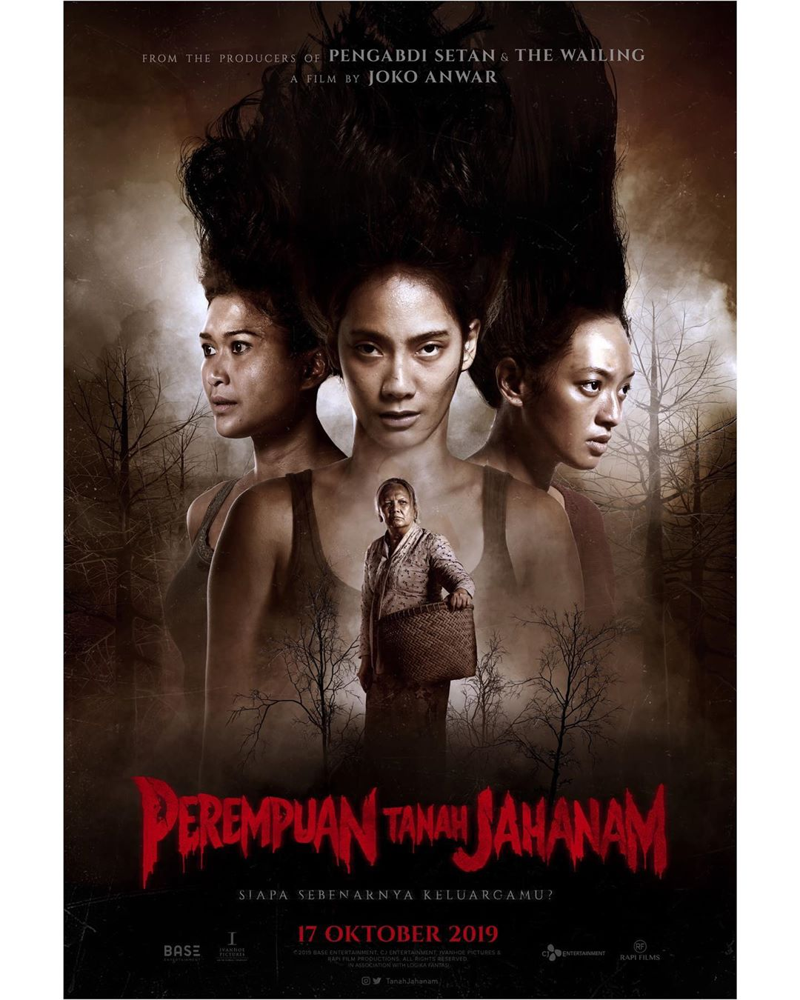

3 FILM HOROR INDONESIA TERPOPULER
1. Alas Pati (Hutan Mati) 2018
Film Alas Pati karya sutradara Jose Poernomo merupakan salah satu film yang siap menemani para pemirsanya pada malam nanti. Film Alas Pati akan menyajikan kisah horor di dalammnya yang mengangkat tema mengenai hutan kematian. Film dengan durasi tayang 82 menit ini akan menampilkan aktor-aktor tenar seperti Nikita Willy, Jeff Smith, Stefhanie Zamora, Roy Sungkono, Naomi Paulinda dan Maura Inry Gabrielle. Alas Pati mengisahkan lima orang sahabat Semester 4 Fakultas Ekonomi yakni Raya (Nikita Willy), Dito (Jeff Smith), Vega (Stefhanie Zamora), Rendy (Roy Sungkono) dan Jessy (Naomi Paulinda) yang punya pekerjaan sampingan sebagai artis blog video. Raya yang mencetuskan ide untuk mengunjungi sekaligus membuat video di sebuah kawasan hutan bernama Alas Pati, sebuah hutan mati dalam bahasa Jawa. Dari rumor yang beredar, Alas Pati digunakan sebagai tempat peristirahatan mereka yang tidak diperbolehkan untuk tinggal di dunia ini atau selanjutnya. Sehingga membuat mereka gentayang menjadi hantu.
2. KKN di Desa Penari 2022

Kisah horor ini telah lama dinantikan publik setelah lama tertunda akibat pandemi Covid-19. Film KKN Desa Penari mengangkat kisah nyata sekelompok mahasiswa yang melakukan KKN (Kuliah Kerja Nyata) di daerah Jawa Timur. Mereka adalah Nur (Tissa Biani), Widya (Adinda Thomas), Ayu (Aghniny Haque), Bima (Achmad Megantara), Anton (Calvin Jeremy), dan Wahyu (Fajar Nugraha). Keenam mahasiswa tersebut tinggal di sebuah desa terpencil. Pak Prabu (Kiki Narendra), sang kepala desa, memperingatkan mereka untuk tidak melewati batas gapura terlarang. Kegiatan yang awalnya berjalan lancar berubah mencekam setelah Nur dan Widya diganggu oleh sesosok penari cantik. Satu persatu para peserta KKN mulai merasakan keanehan di desa tersebut. Tampaknya penghuni gaib desa tersebut tidak menyukai mereka. Nur akhirnya menemukan fakta bahwa salah satu dari mereka melanggar aturan yang paling fatal di desa tersebut. KKN di Desa Penari tayang 30 April di bioskop.
3. Perempuan Tanah Jahanam 2019

Perempuan Tanah Jahanam menceritakan tentang keinginan Maya yang diperankan Tara Basro dalam mengungkap misteri keluarganya. Hal itu bermula ketika Maya mengalami permasalahan termasuk dalam pekerjaannya bersama dengan Dini (Marissa Anita). Masalah itu membuatnya ingin 'rehat' sejenak dengan mengunjungi tanah leluhurnya. Hingga pada suatu malam, Maya menemukan kenyataan rumit tentang masa lalu dan keluarganya yang membuat dirinya harus berjuang menyelamatkan hidup. Film untuk DEWASA ini bisa disaksikan di seluruh jaringan bioskop Indonesia. film Perempuan Tanah Jahanam yang skenarionya juga ditulis oleh Joko Anwar telah dipersiapkan selama 10 tahun. Joko Anwar mengaku tidak terburu-buru untuk membuat film ini karena dirinya ingin mematangkan lagi konsep-konsep dari film Perempuan Tanah Jahanam. Christine Hakim sebagai aktris langganan peraih piala Citra yang melegenda turut bermain dengan memerankan tokoh seorang ibu yang kontroversial. Kasting para pemain dan pemilihan lokasi sebagai latar belakang shooting film yang bernuansa desa menjadi nilai tersendiri. Film Perempuan Tanah Jahanam rekomendasi banget untuk orang-orang yang suka dengan genre thriller-horor, bahkan ada suguhan unsur budaya juga di dalamnya yakni pertunjukkan wayang kulit. Namun tidak diperuntukkan bagi anak-anak di bawah umur karena ada adegan pembunuhan secara tragis.